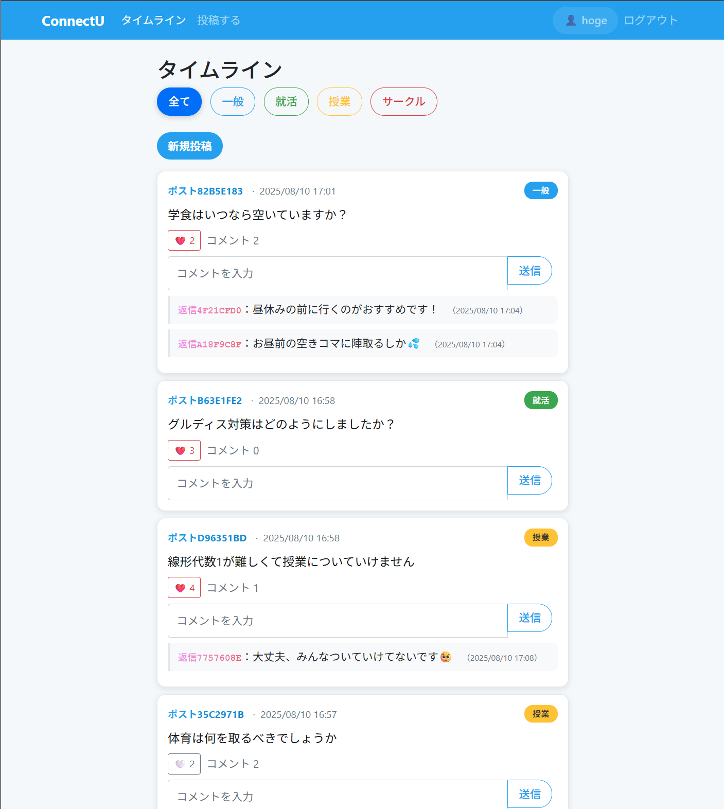
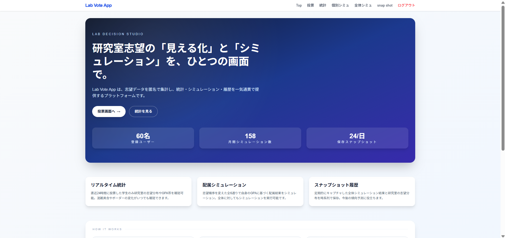
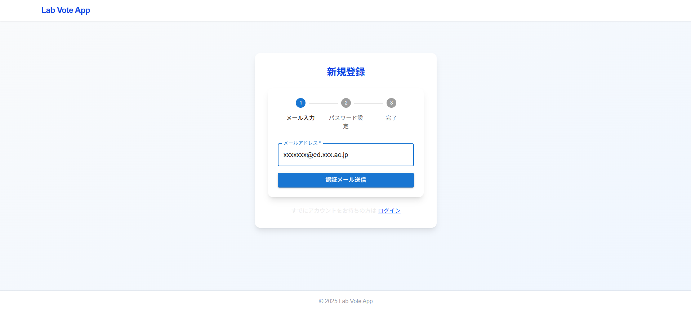
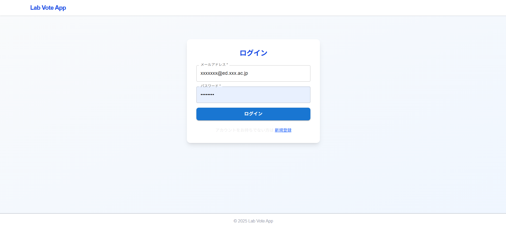
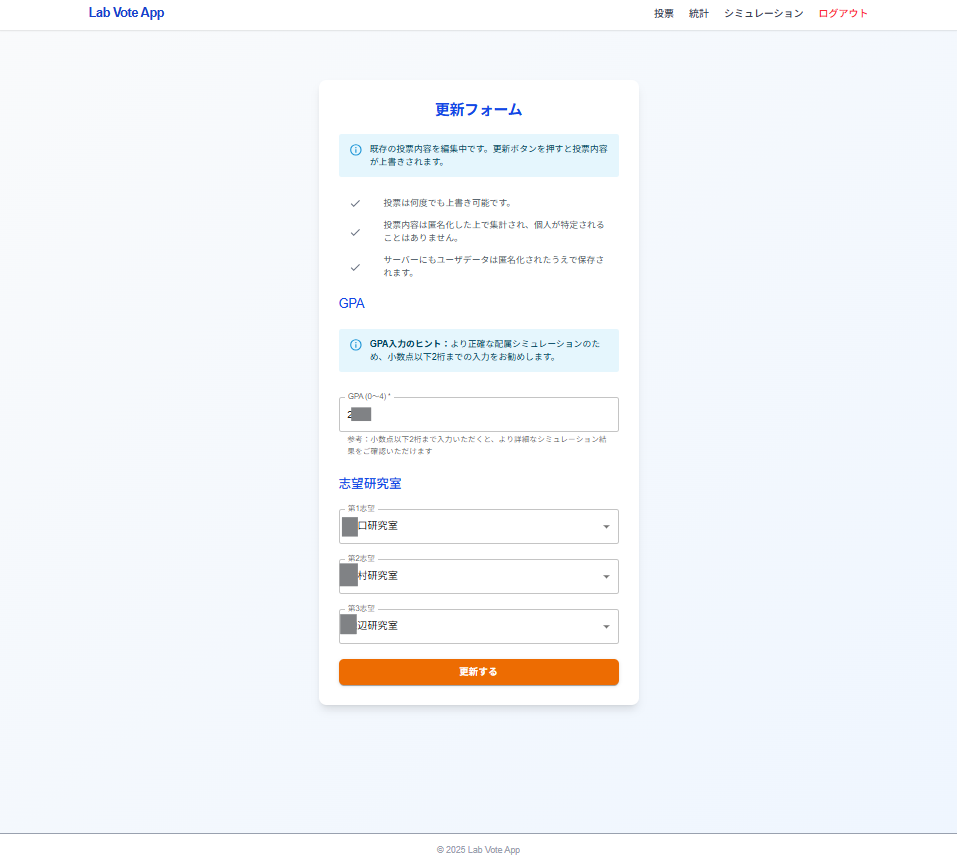
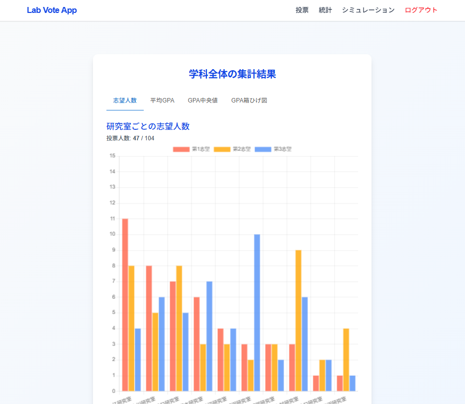
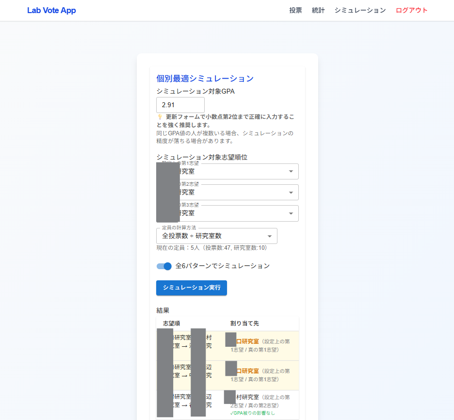
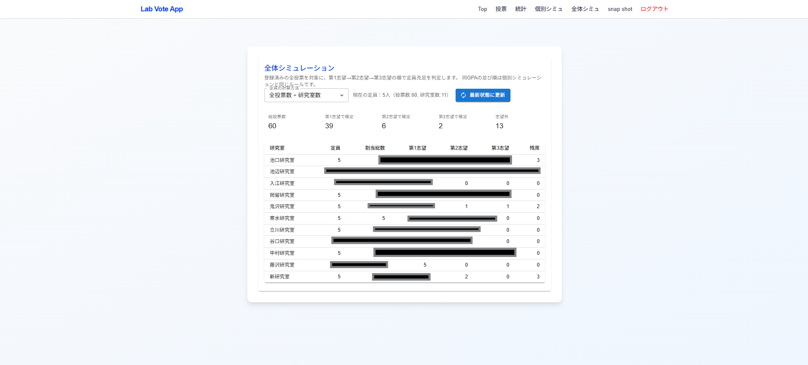
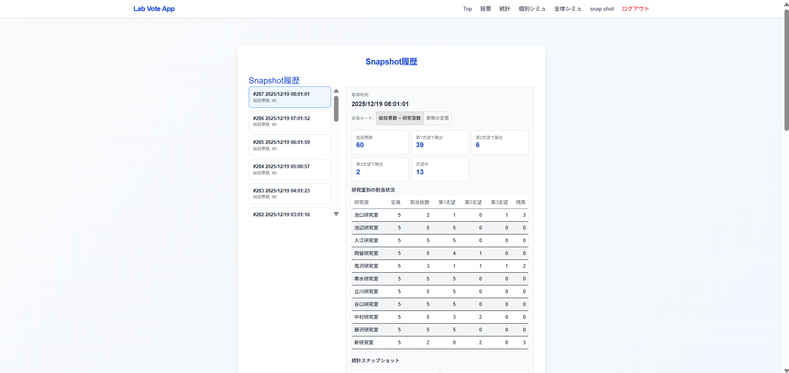

2023年4月 東京理科大学工学部情報工学科入学（現在4年次）
学内ITサービスのお問い合わせ対応を担当。加えて、事務員の定常業務を効率化するRPAをPower Automateを用いてチーム体制で構築するなど、RPA導入支援にも従事。
電子カルテデータに基づき、傷病名から処方薬剤を推測するナイーブベイズモデルを実装。病院の事務員が電子カルテや書類の不備を修正する際の参考情報として、確度の高い順に薬剤を表示する仕組みを構築。加えて、AccessデータベースからC#で分析用テーブルを生成するシステムも開発。
エンジニアインターンとして参加。地理/台帳データの前処理に従事。
Summer Engineer Campに参加。社内向けの汎用アノテーションツールの開発を担当。
AIエンジニアとして参加。面談アルゴリズムの開発・改善（論文読みから実装まで）や、外部企業との協業プロジェクトにおける要件整理・API仕様策定などに従事。
画像処理・画像AIの技術を中心に、AI分野全般に興味があります。将来的には、画像AIを活用した医療診断のサポートを通じて医療分野に貢献したいと考えています。
最近はインターンや個人開発を通じて、技術をプロダクトに落とし込む力（プロダクト志向）が身についてきたと感じています。今後は研究力もしっかり伸ばしていきたいと考えており、技術と研究の両輪で成長していく方向性を目指しています。
2025年春に、webの勉強の一環で、Flaskを用いて実装。実装としてはFlaskサーバからの静的ファイルの配信がメインであり、最低限の認証機能、掲示板機能を実装している。
もうRenderが動いてない。気が向いたらローカルで動かして貼る予定
2025年の8月初めに、初心者用のハッカソンでチームメンバー二人と共に実装。前述のUniChatをベースとしており、それに匿名投稿/コメント機能やいいね機能、チャンネル別投稿機能を追加している。ニーズやユースケースはチームメンバーと話し合い、自分の立場や交友関係にとらわれず、学内の悩み事を相談できるような場を提供することを目的に開発した。

2025年のフューチャー社Summer Engineer Campで開発を担当した、社内向けの汎用アノテーションツール。主にフロントエンドの実装 + 矩形判定アルゴリズムの開発を担当。詳細は秘密保持契約のため省略。
（もし申請通ったらデモ動画を貼る予定）
2025年9月中旬、3日間程度で集中的に開発。フルスタックで機能の構想、設計、実装まで一気通貫して一人で行い、Renderでのデプロイ、学科内での周知まで全て担当。
技術スタック：
現時点で実装できているのは
アンケートの回答ができるのは事前調査と本回答の2回だけであり、全体の傾向が確認できるのは事前調査後だけである。つまり、リアルタイムで動向を確認するのが困難。さらに、発表されるのは人数だけであり、実際どの成績の層が集まっているかも把握できない。対して、配属ロジックは駆け引きが生まれるような仕組みになっており、なるべく良い結果を出すには、出来るだけ多くの情報/判断材料が必要。そのため、リアルタイムで全体の動向を確認でき、さらに判断材料としてシミュレーションを実行できるようなプロダクトを開発するに至った。
このプロダクトは、学科104人に対して大部分の実ユーザが集まらないと意味を成さないものであったので、「投票したくなるような動機付け」に一番注力した。代表的なものとしては、
など。結果として、リリース後3日目（2025/09/20時点）で、47人のユーザに登録いただいている。しかし、理想としては最低でも70人が集計/シミュレーションの信頼性及び精度向上に必要だと考えているので、今後はさらに機能追加し、インセンティブを向上させる所存である。(追記：以降51人までユーザ増加 → 最終時点では60人が登録)








2026年初頭より開発中のチームプロジェクト。家計簿アプリ × 購買データ活用をコンセプトとした新規事業で、ビジネスサイドと開発サイドの双方のメンバーで構成。自分はビジネスサイド（競合分析・データの強み/弱み分析・市場調査）および開発を担当。2026年4月中旬のピッチに向けてデモリリースを目指して開発中。
東京理科大学の支援プログラムに採択された個人プロジェクト。現在企画・検証フェーズのため、詳細は追って更新予定。
インターンや個人開発を通じて、少しずつプロダクトを形にする力がついてきたと感じています。
今後はAI/ML領域の研究にも本格的に踏み込みつつ、プロダクト開発と研究の両面で成長していきます。